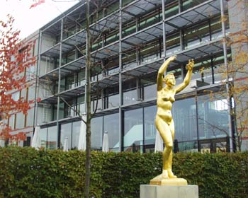

Prix Europa
Kao sto smo već pominjali, Yahti.com predstavljena je na takmicenju za najbolje evropske TV, radio i Internet produkcije Prix Europa.
Prvu nagradu zasluzeno je dobio danski projekat Fantastične priče. Evo šta je rekao žiri, koji su činili
sami takmičari:
"What can a website do well that we have all loved since the beginning of time? A simple idea, which comes from our inner needs, can bridge time and technology. We all love stories, and if they are true they are more compelling and fascinating. This site allows ordinary people to relate the extra-ordinary. Those co-incidences, those loves, those times, which a truly random world would not allow – these are the essence of this website. These real life stories then plant seeds which are developed into cross media productions, and used to inspire fiction. The site has elegance and a human scale that allows us to make sense of the magic of the world around us. The winner of this year's Internet Exploration Award is ‘Fantastic Stories’ – ‘Fantastike’ – from DR in Denmark."
Drugu nagradu osvojio je švedski vebsajt koji služi za učenje znakovnog jezika za gluvoneme, a treću projekat BBC-a Big Weekend.
* * *
Yahti.com je bila daleko najmanja produkcija. Opšti utisak je da u Evropi trenutno postoje i ovde su predstavljeni apsolutno fantastični projekti koji povezuju Internet, televiziju, radio, knjige, mobilne telefone itd.
Umesto nagrade La Lara je morala da se zadovolji donošenje utisaka, umora, H&M krpica, Mozart čokoladnih srca, ne preterano uspešnih fotografija, ideje da bi seoba u Berlin bila apsolutno prihvatljiva opcija.
Slike, videćete već kakvog kvaliteta, vezane za takmičenje su ovde. One vezane za Berlin su ipak bolje, pa će one isto biti stavljene, ali naknadno.
Komentari
Fantasticne price ni ja ne mogu da citam, ali je projekat ovako koncipiran: Onaj ko hoce da isprica neku fantasticnu pricu koja mu se desila, baziranu na nekoj koincidenciji i slicno, ode na mapu na sajtu, klikne na mesto odakle je ili za sta je vezana prica i tu se pojavi ona kukica. I u formularu ispise pricu. Onda neke od tih prica na radiju citaju poznati glumci, napravili su i male filmove koji se prikazuju na TV-u izmedju emisija. Takodje su dali neke od njih poznatim piscima da im budu polaziste za nove price. Planiraju i da objave knjigu gde bi bile kako te profi price, tako i price sa sajta.
La Lara | 24.10.06 09:34
To stvarno zvuči dobro. Misliš li da bi u Srbiji bilo moguće napraviti da ista takva stvar zaživi?
 ubipacijentic | 24.10.06 22:50
ubipacijentic | 24.10.06 22:50
Ne znam. Kod njih je za nekoliko meseci napisano i objavljeno hiljadu prica. To sto su poznata kuca i sto su vodili racuna o svim detaljima verovatno pomaze. Videli smo jedan od filmova snimljenih po prici, super je.
La Lara | 25.10.06 09:42
 RSS feed
RSS feed
 sadržaji se objavljuju pod
sadržaji se objavljuju pod
E sjajno, ovo je sjajno!
Bilo bi naravno kud i kamo sjajnije da znam nemacki :(, (mislim prvenstveno na fantasticne price). Ovaj drugi Svedski program me je totalno odusevio, tj sajt za ucenje znakova, jer pokrecemo slican program ovde u Srbiji, ali o tom potom...
Znaci moglo bi ti se ziveti u Berlinu?
Jedva cekam da vidim ostale fotografije, i cujem neumorne utiske :)
vajarka | 23.10.06 17:00